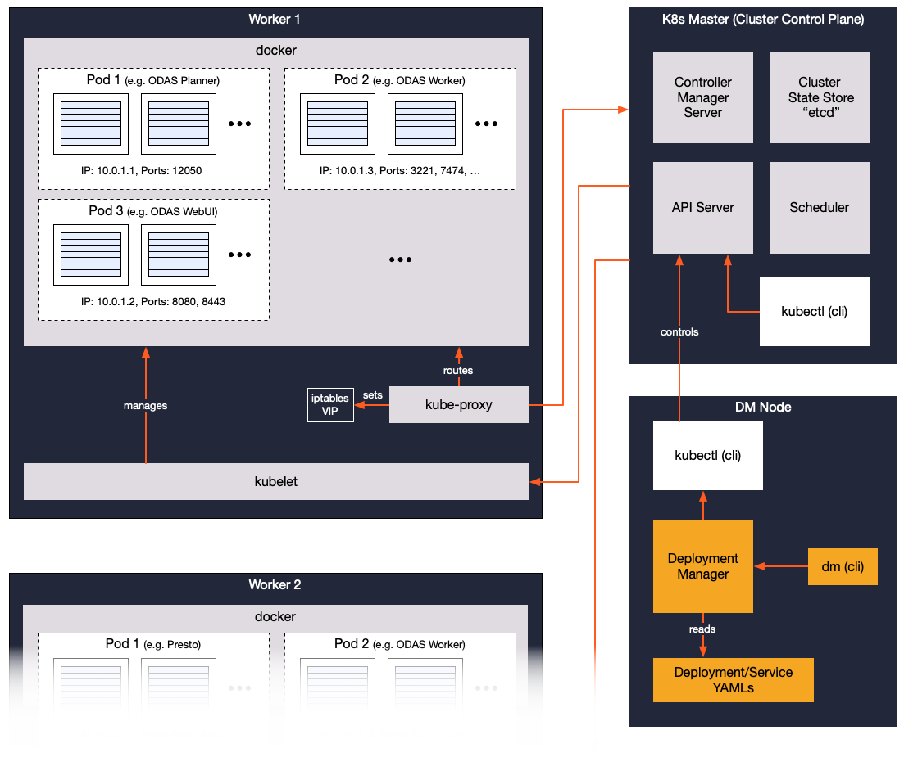

Cluster Sizing Guide
Use this document to help plan the resources needed to run Okera clusters. It is intended for system architects and those in related roles to determine the server size needed to run each ODAS component.
Overview
While the remainder of this document is explaining the resource requirements regarding ODAS clusters in great detail, we start with a summary table. The following instance types are recommended as starting points for your consideration:
PoC/Development Cluster
| Node Type | AWS Instance Type | Azure Instance Type |
|---|---|---|
| DM | t2.medium |
Standard_B2s |
| Worker | t3.2xlarge / m5.2xlarge / c5.4xlarge |
Standard_B8ms / Standard_D8_v3 / Standard_F16s_v2 |
Note: Choose the larger worker types when your requirements for these clusters is expected to include performance assessments.
Production Cluster
| Node Type | AWS Instance Type | Azure Instance Type |
|---|---|---|
| DM | t3.2xlarge |
Standard_B8ms |
| Worker | m5.4xlarge / c5.9xlarge |
Standard_D16_v3 / Standard_F32s_v2 |
General Information
Okera’s ODAS is a data access service built for distributed, scalable workloads. It is comprised of multiple services that are deployed in Docker containers and orchestrated by Kubernetes.
Some components manage metadata, including database and dataset schema, or their access policies, or the state of the cluster itself. Other components process client requests and facilitate data transfer from storage to the requesting clients.
Operation of an ODAS cluster is mostly automated, with a management and orchestration layer, and the actual ODAS services hosted therein. The former can be managed by Okera itself or delegated to provided container-management services, such as AWS EKS or Azure AKS.
Management Services
When Okera is managing the container orchestration, it is using the following (optional) shared services.
(Optional) Deployment Manager (DM) - The Deployment Manager creates, monitors, manages, and deletes ODAS clusters. It persists the configuration and state of each managed clusters to a relational database and installs ODAS components on the launched cluster nodes. One DM instance can manage multiple ODAS clusters.
User Services
Each cluster host may run one or more of the following ODAS sub-services. Some services, such as the ODAS Worker that handles task execution, run in multiples for greater parallelism and availability. Others, such as the ODAS Planner, run in multiples to ensure continuity of service.
Okera Catalog - The ODAS Catalog serves database and dataset information, including schema definitions and access policies. This information is backed by a relational database and is served directly to other ODAS components as needed.
ODAS Planner - The ODAS Planner receives data definition/manipulation/control language (DDL/DML/DCL) requests from clients. For DML, as an example, it generates a plan, based on Catalog metadata, access and storage policies, and the cluster’s runtime resources, which is then distributed and executed across the available Workers. The Planner is a relatively lightweight process; it does not process client data.
ODAS Worker - ODAS Workers execute tasks assigned by the Planner. They transfer data from underlying storage to the calling client. Workers do not store client data at any stage of query execution, and therefore rely on adequate network, memory, and CPU resources to complete each task.
ODAS REST Service - The REST service gives internal and external clients, including the Okera Web UI, access to ODAS resources through a collection of REST-based endpoints. It is primarily intended for examining and updating Catalog metadata and so is not recommended for heavy workloads, such as scanning a large dataset.
ODAS Web UI - The Web UI offers HTTP-based access to the Catalog, giving lightweight users a way to discover and browse available databases and datasets. It also provides limited support for test queries, discovery of new datasets, management of access policies, and usage reports.
Internal Services
The internal services listed below coordinate and orchestrate user facing ODAS cluster services. None of these services operate in the request path, and therefore do not require the same resources as a Worker.
Kubernetes Master - Kubernetes (K8s for short) is a service for managing the needs of containerized applications. Its design follows the well-known master/worker paradigm, in which the master, or Kubernetes control plane, coordinates all machines put under its service. The master includes a controller manager, a resource scheduler, and a REST API server.
Kubernetes Worker - Kubernetes workers (aka kubelet) are co-located with ODAS components. Based on scheduling and other instructions from the K8s master, these workers operate directly on the containers that host ODAS services. All ODAS services, except the Deployment Manager, rely on Kubernetes workers for operational resources.
Canary - The Canary monitors the cluster for ODAS service availability and status. It is polled regularly by the Deployment Manager to detect any state changes to cluster services.
ZooKeeper - ODAS uses ZooKeeper to provide membership, consensus, and task coordination services to the roles that need it. While it is very light on system resources, it depends on as little contention for disk access as possible to guarantee good service.
Cluster Node Types
Many of the ODAS services listed above are co-located with other services on specific compute nodes.

We describe their resource requirements with that in mind:
(Optional) Deployment Manager (DM) - The Deployment Manager operates on a standalone host, as it is designed to manage multiple ODAS clusters from a single point. It uses a database as a backing store for ODAS cluster configurations and state updates. As a standalone admin component, it requires relatively modest memory, CPU, and storage resources.
Kubernetes Master (KM) - In a production cluster, the KM service would normally run standalone. For a proof-of-concept (PoC) or light-duty workloads, it can be co-located with ODAS services as its resource requirements are also low for CPU, memory, and storage.
Worker Node (Worker) - These machines run all the remaining services, as scheduled and assigned by the Deployment Manager (for Okera managed clusters) and Kubernetes master subsequently. The resources needed by the Okera services, especially the ODAS Workers are high in comparison and will use as much CPU, memory and network I/O as possible to fulfill the current workloads. The node also runs the K8s worker (aka kubelet) service, which itself does not demand many resources. Note that some ODAS components, such as the Catalog services, require access to a database to persist and read their state.
Resource Requirements
Dependent on the use of IaaS, for example in form of a cloud provider, or bare metal, the node types require specific resources. This includes, but is not limited to, number of CPUs (or cores), network bandwidth and connectivity, storage capacity and throughput, and available system memory. In practice, the mentioned nodes types fall into two categories, non-worker and worker nodes, with their requirements discussed in the next two subsections.
Non-Worker Node Requirements
Non-worker node types require only moderate resources, and it is often enough to ensure that any possible virtualization (for example, when running in a cloud environment) is not causing any undue strain on the basic resources.
Worker Node Requirements
For worker nodes, the requirements in more detail are:
CPU - Workers executing user queries need enough CPU to handle server-side functionality, including decompression of data, built-in and user-defined functions, I/O handling, and so on. Okera’s server code is highly efficient and optimized for these tasks, usually putting only medium strain on the CPU.
Network I/O - Since Okera sits in between the data and consumers, the major focus for resources is network I/O, especially in cloud environments, where data resides in network-attached storage services. Okera recommends that network resources should not be artificially limited, for example, through throttling by the infrastructure provider (as may happen with small instance sizes in cloud services).
Disk - Workers do not persist data to local (or attached) disks. In other words, Okera requires only a marginal amount of local disk as all query data is streamed through network and memory only. The bulk of its disk requirements come from the binary container images stored locally on each node. Okera recommends disk space of around 30-40 GB to be available.
Memory - Apart from general usage, there are two places where Okera requires a flexible amount of memory on worker nodes: per-query data structures and cache. These are discussed in the following subsections. For functional testing and development 16 GB of memory should be viable. For all production use of Okera, the memory provided should start at 32 GB.
Query Concurrency
By default, each ODAS Worker process can handle up to 500 concurrent requests. This does not necessarily mean 500 separate users, since larger queries are split into many smaller tasks and distributed across the server, but up to 500 concurrent tasks that are executed. For task ordering across users, the ODAS Worker relies on the downstream compute engine to schedule these tasks according to the configured rules.
In general, the default maximum memory per worker per query is set to 128 MB, which means concurrency is driving the combined memory usage up. The more concurrent queries you are running on a worker, the more memory is needed. If a query fails to allocate enough memory it is aborted and an error is reported to the user.
General Memory Requirements
For regular queries that do not contain JOIN’s executed by Okera (see next section), the memory requirements are fairly low, as the server processes need just enough to handle the streaming data for all concurrently running queries (plus some internal data structures and so on).
This includes the memory needed to load the raw data from storage in small chunks, as well as the structures to unpack the data into batches of rows.
For every row, the servers need as much memory for the latter as is required by the query, based on the projection; for instance, a SELECT * FROM table will need memory for all column types of the schema, while a SELECT ID FROM table will only need 4 bytes (assuming ID is an INT type).
On average, the memory per query should be in the low megabyte range.
However, Okera also caches table data read from object storage systems (such as AWS S3) which means you should observe the memory usage of a worker node pegged at some higher steady state in practice. This normal and expected.
Memory usage varies also based on the dataset metadata, with partitioned tables with complex schemas requiring more compared to more simple schemas. Okera recommends a partitioning schema that strikes a good balance between per-partition size and number of partitions. In practice, a daily partitioning seems a good starting point for sources that produce data in the low gigabyte range per-day (up to 10 GB).
Okera recommends at least 32 GB of memory for average concurrency (lower tenths), leaving enough memory for the caching to be effective. You will have to increase memory when the concurrency is very high (hundred of concurrent queries being executed).
Memory Requirements for JOINs handled by Okera
An exception to the general memory requirements mentioned are executing server-side joins (see Supported SQL for details on what joins are executed within ODAS). These joins need to load the joined table into memory, after any projection and filtering of that table has taken place.
For example, assume a table with 100 million rows and 100 columns that is used as a filter against other data tables.
Further assume a particular join is reducing the number of rows of the filter table to one million and the column count to two as part of the JOIN statement in the internal Okera view.
One of the columns is an INT data type with 4 bytes, while the other column is a STRING with an average length of 10 bytes.
You will need 1M * (4 + 10) bytes, or roughly 14MB for the filter table in the worker memory.
In addition, if you are running about 10 similar queries concurrently, using the same filter table and assumed projection and filtering applied to it, then you will need 10 * 14MB, or 140MB of available memory on each worker machine, assuming all workers are equally used in the query execution.
The default memory per worker per query of 128 MB suffices in this example, though the concurrency is driving the combined memory usage up. You need to carefully monitor the memory usage using the provided service metrics and adjust as necessary.
Cluster Environment Types
The most common configuration types for ODAS clusters are for either proof-of-concept (PoC), development-only, or production environments. The first two types are used to prove a cluster’s function and capability and so require modest resources. Production environments must be sized to meet stated business goals and requirements, which can vary by use case, concurrency, and data set size. The following sections discuss the two environment types in more detail.
Proof-of-Concept/Development Environment
Although a development or test environment can run on a modest allocation of resources, underestimating the memory and network resources to transfer data can still lead to sluggish or failed operation. Okera does observe cases where a shared development database with few concurrent connections, for example, times out frequently, triggering I/O errors that affect the cluster’s ability to respond to its users. Query failures can also result from workers being unable to communicate with their master or supervisor processes.
Production Environment
Sizing and selecting the resources needed for production depends on the factors, requirements, and constraints the business user knows best. When in doubt, it makes sense to start by understanding the concurrent demand for access and the size as well as complexity of the data sets in use.
As a general rule, the expected workload should not exceed certain system resources to ensure there will be sufficient spare capacity for the operating system and to allow for spikes on demand. ODAS components rely heavily on a distributed collection of services. Chronic saturation by user demand can cause timeouts, which leads to task or job failures. Oversizing the resources can, of course, lead to cost overages.
In general terms, Okera recommends to pair the ODAS resources with those used in the downstream compute clusters. This means, given a node type with a certain amount of CPU cores, you should use the same type for both the compute and Okera nodes, choosing a node count ratio between the compute and ODAS clusters providing the necessary resources for the given workloads. Since ODAS clusters are often network bound due to the fact that all heavy computing (such as aggregations) is done in the client compute clusters (such as Presto, Hive or Spark), Okera is recommending the following ratios:
-
Batch Workloads: A 10:1 ratio is recommended as a starting point. That means, for every 10 compute nodes have one ODAS worker node with the same specifications.
-
Interactive Workloads: A starting ratio of 4:1 is recommended for more MPP-style, ad-hoc query engines that promise low-latencies to their users (for example Presto).
After monitoring the vitals of the ODAS cluster serving either workload and assuming you see less than 50-60% load you can increase the ratio to a higher number, for example 20:1 for batch and 10:1 for interactive workloads.
We will discuss the various resource types below in the context of the mentioned cluster types, setting boundaries for allocation ranges (where applicable).
Cloud Providers
Cloud providers offer a range of pre-configured instance types that address well-known, general workload constraints (for instance, compute-bound or I/O-bound). In addition, compute and storage resources are modelled as standalone services. Core services, such as network load-balancing or DNS, are often represented as a service on top of a selected compute service (that is, not completely elastic to workload). Below we describe the vendor-specific compute and storage resources available in detail, and mention so-called support services as needed.
Amazon Web Services (AWS)
AWS offers a catalog of services that appeals to many companies and enterprises looking to migrate their applications to the cloud. The pace of AWS’ innovation, the time saved in bypassing internal procurement and provisioning processes, and the flexibility of a la carte services can be an attractive alternative to on-prem deployment. In AWS, any customer can create and run a virtual machine with a few button clicks. AWS calls their virtual machine service the Elastic Compute Cloud, or EC2 for short.
To run ODAS well, it’s essential to pick EC2 types that are well-suited to their intended workload. Below we offer some general advice on ODAS compute and storage requirements.
Compute Instance Types
For production-level ODAS clusters using EC2, we favor the following attributes in instance types:
Local Storage: Although AWS Elastic Block Store (EBS) is inexpensive to use, it is not a low-latency option. Consider instance types that support a local storage option, in particular solid-state drives (SSD), to mitigate this constraint. This storage type will also reduce the impact an operating system’s workload may have on the hosted application’s resource needs.
Placement Groups: Consider putting all instances for a cluster into one Placement Group to optimize for network connectivity. In this configuration, you can take advantage of EC2 instances that support 25Gbps of network bandwidth.
Enhanced Networking: Instance types that support Enhanced Networking, offer improved packet per second (PPS) performance, lower network jitter, and less latency.
Note that ODAS clusters often run on the same instance types as your current compute needs, for example, the instance types used for your Hadoop or EMR infrastructure. These are typically in the M5 or C5 classes.
As for instance types in general, the primary resource concern for data workloads is available memory, especially for joins handled by Okera and working data sets that are kept in memory by ODAS Workers. And, as mentioned above, high concurrency needs go hand in hand with plenty of memory.
Then following classes of instance types are available in AWS EC2:
| Class | Rec. | Description |
|---|---|---|
| M | Yes | Balances memory and CPU cores |
| C | Yes | More CPU cores over memory |
| R | No | More memory over CPU cores |
| I | No | Optimized for local disk I/O |
Note: “Rec.” is short for “Recommended by Okera”
Given that compute engines often need a balance between memory and CPU, the M-class instance types are the recommended ones.
For example m5.2xlarge and m5.4xlarge are good initial choices for PoC and production clusters respectively.
Although M5 uses EBS for its instance storage, the type scales to accommodate many requirements.
Also, EBS connectivity for the M5 series is optimized and superior to other instance/EBS combinations.
The C-class types emphasizes cores over memory, offering half the memory of M5 types at the same number of cores.
For example, c5.4xlarge and c5.9xlarge are possible choices for production clusters.
R-class types are memory-optimized, supporting up to 488GB of memory. This is often not useful in practice, as workers eventually reach a steady state as far as memory is concerned, after which more memory is not required nor beneficial.
Finally, the I-class types are optimized to handle local I/O, such as SSDs, more efficiently. As explained above, ODAS does not use disk for query execution, so extra optimization for local disk is not required.
When in doubt, establish a baseline with a small but viable instance. We recommend at minimum the following:
PoC/Development Cluster
| Service | Node Type | Instance Type |
|---|---|---|
| EC2 | DM | t2.medium |
| EC2 | Worker | t3.2xlarge / m5.2xlarge / c5.4xlarge |
Note: Choose the larger worker types when your requirements for these clusters is expected to include performance assessments.
Production Cluster
| Service | Node Type | Instance Type |
|---|---|---|
| EC2 | DM | t3.2xlarge |
| EC2 | Worker | m5.4xlarge / c5.9xlarge |
Once you have some performance results, consider increasing or decreasing instance sizes accordingly, or switching to types with the memory, cores, or network capacity that are a better fit.
Storage Instance Types
In practice, most AWS-based data lake operators use S3 for their storage layer. Using S3, you can stop or terminate compute resources to reduce cost without risk of data loss. The data store is decoupled from compute and is always available; it does not depend on any client or other service for access.
The following pointers are widely used for compute-local and database-related instance types.
Ephemeral Instance Storage: This instance-based storage is only used by the operating system and is cleared at the end of each session (hence the term ‘ephemeral’).
Elastic Block Store (EBS) Instance Storage: EBS storage persists across EC2 instance restarts. It is often used to keep data independently of the EC2 instance using it. EBS volumes can also serve as scratch space for running instances and their hosted services. Note that some EC2 instances only support EBS storage.
As discussed above, EC2 instances that support SSD-backed EBS volumes and EBS-optimized network connectivity offer the best performance profile.
Simple Storage Service (S3):
S3 is a standalone object store service. Any client can access it directly. It is available in two types: standard, and a version that has been optimized for long-term storage. Only the standard service is recommended for use with ODAS.
Relational Database Service (RDS) for DB Storage:
The number of concurrent connections an RDS instance can support is limited by the memory available from its host EC2 instance. RDS itself is not inherently elastic; you must choose the EC2 type to pair it with. There is no straightforward or recommended way to modify available memory without changing the EC2 instance type.
For a sizing example, consider an RDS service running on a db.t2.small instance, which uses the t2.small EC2 type.
Note: The example is using an instance type that is not recommended in practice. It is used for the sake of showing the effects of low memory on the connection limits.
This type offers 2 GB of memory, which limits the number of concurrent RDS connections to about 170. A rule-of-thumb formula is discussed here:
Serverfault: “The current RDS MySQL max_connections setting is default by
{DBInstanceClassMemory/12582880}, if you uset2.microwith 512MB RAM, the max_connections could be (512 * 1024 * 1024)/12582880 ~= 40, and so on.”
In general, it is recommended the EC2 instance type used for RDS has enough memory to allow 1.5x the connections required, which further assumes no other workloads will be present on the instance. For example, an R-class type with at least 64 GB of memory is recommended.